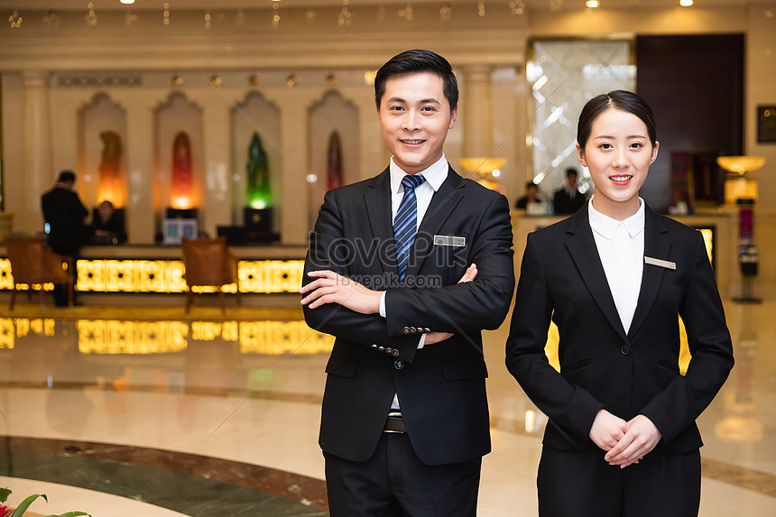
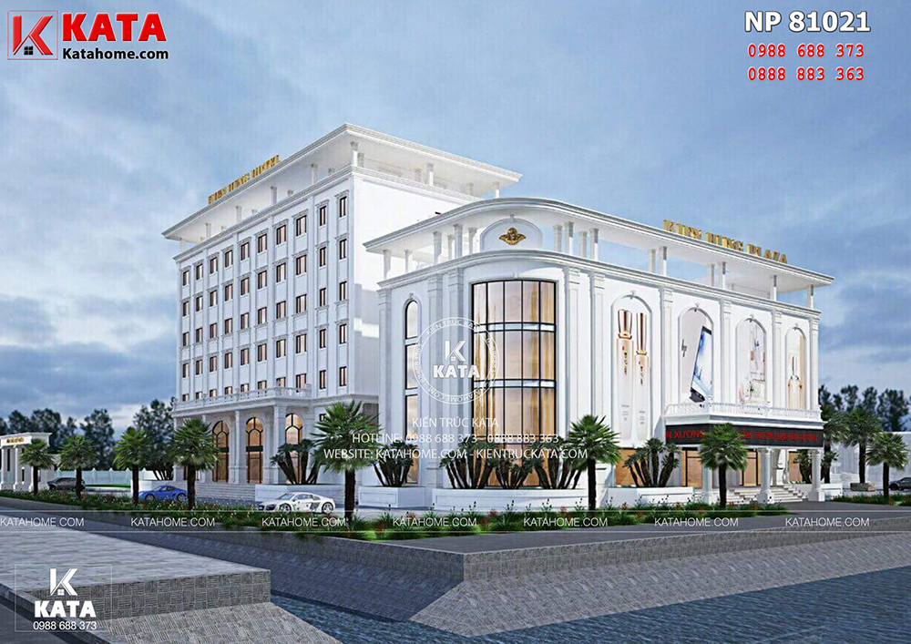
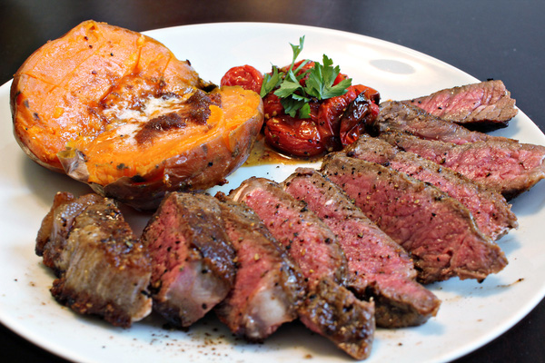

Khách sạn KNK là một khách sạn đạt chuẩn 5 sao nằm gần phố đi bộ Nguyễn Huệ với không gian náo nhiệt và gần trung tâm thành phố HCM.Từ khách sạn quý khách chỉ mất 15 phút để đến sân bay Tân Sơn Nhất và 5 phút để vào trung tâm thành phố.

- Các tiện ích của chúng tôi
-Sự phục vụ chu đáo của nhân viên

Mang đến nơi ở chất lượng cao để khám phá nét đẹp văn hóa, gần các hoạt động vui chơi giải trí cho gia đình, gần các danh lam thắng cảnh tại TP.HCM, Khách sạn NKN là sự lựa chọn phổ biến của cả khách nghỉ dưỡng hay đi công tác. Từ đây, thật dễ dàng để trải nghiệm mọi khía cạnh của thành phố sống động này. Chỗ nghỉ có vị trí rất thuận tiện, du khách có thể thoải mái tham quan, khám phá các điểm du lịch nổi tiếng.
-Phong cách thiết kế sang trọng đẹp mắt
Khác sạn chúng tôi được thiết kế bởi những kiến trức sư trong và ngoài nước tài ba nhất.Phong cách chúng tôi mang lại cho quý khách Á - ÂU hòa quyện,nhưng vẫn giữ những lối kiến trúc và các biểu tượng nổi tiếng của nước ta như hoa sen , rồng ,... Và các biểu tượng đẹp mắt khác.

-Các đầu bếp đến từ các nước bản xứ cho những món Âu - Á
Các đầu bếp làm việc tại nhà hàng được mời từ các nước bản địa để nấu các món đem tới cảm nhận chân thực nhất với từng món ăn của thực khác.Với phương châm mang lại sự hài lòng của khác hàng là trên hết nên chúng tôi không ngừng bồi dưỡng các cầu bếp để mang lại sự hài lòng tuyệt đối từ khách hàng .Bên cạnh đó còn mang đến nơi ở chất lượng cao để khám phá nét đẹp văn hóa, gần các hoạt động vui chơi giải trí cho gia đình, gần các danh lam thắng cảnh tại TP.HCM, Khách sạn NKN là sự lựa chọn phổ biến của
